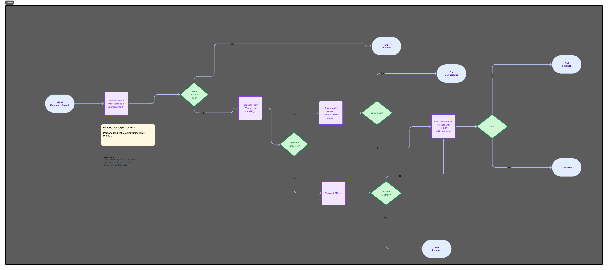
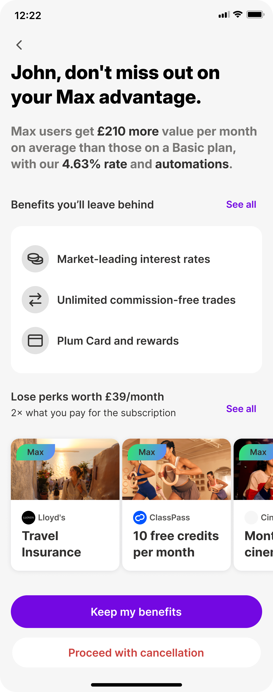
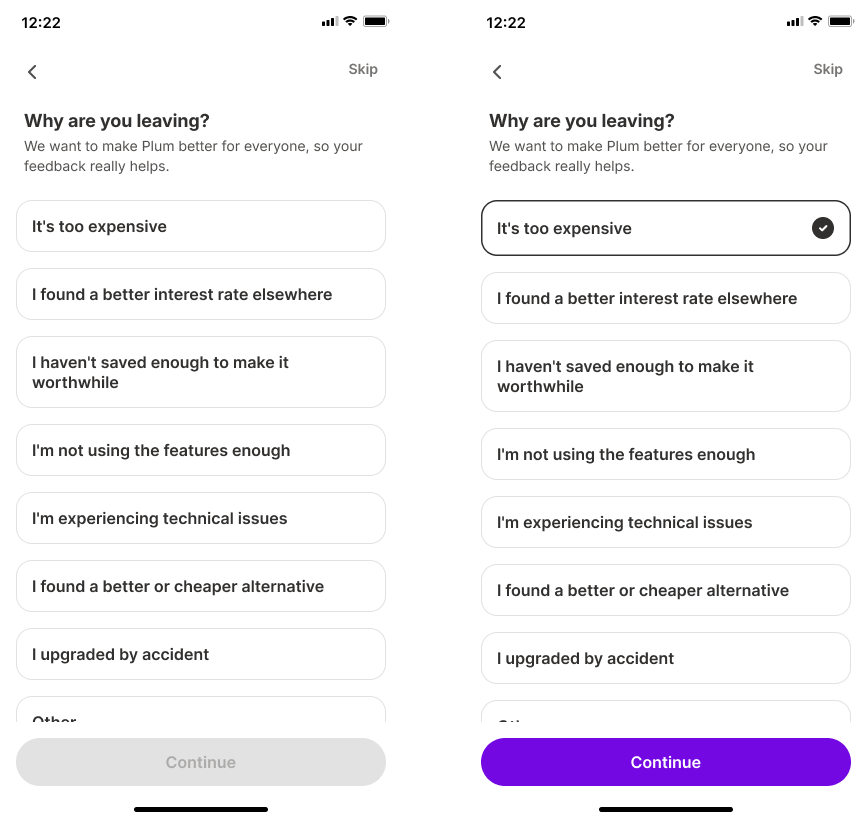
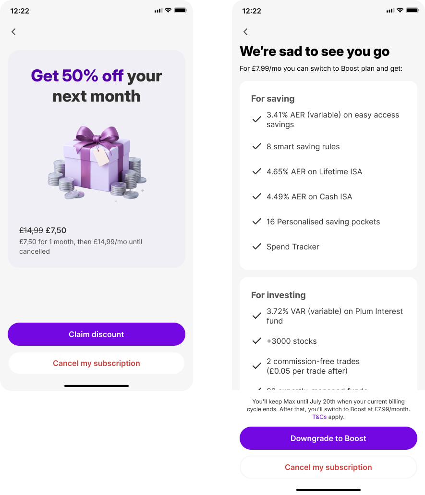
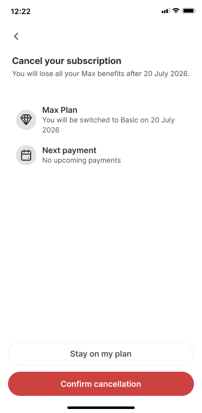

Discovery & Research
The Problem
The old flow was a one-line "are you sure?" prompt: no value context, no alternative to leaving, and no way to capture why someone was going. Internal data pointed to two solvable causes behind most cancellations: cost sensitivity and unused features, not dissatisfaction with the product itself.
Why This Matters
Cancellation isn't necessarily a retention problem, for a meaningful share of users, it's a value-awareness problem. Some weren't leaving because Plum had stopped being worth it; they were leaving because they'd lost sight of what they were already getting. That reframing is what shaped the whole flow.
How might we help users make an informed decision about their subscription, by showing the value they're already receiving and offering a flexible alternative, so they don't cancel impulsively out of cost concern or forgotten value?
The value of Plum isn't visible at the exact moment users consider leaving, and an unoptimised cancellation flow gives them nothing to weigh it against.
How might we surface real value and a flexible alternative, so users don't cancel impulsively before making an informed decision?
If users see relevant value reminders and are offered an appropriate lower-cost alternative, fewer will complete cancellation, and every exit becomes structured product data.
Scoping the Problem Space
Before any screens, I aligned engineering, product, and commercial teams on one document: context, success metrics, user needs, and business goals.
Background
No optimised cancellation flow existed, users could cancel directly without understanding what they'd lose or seeing any alternative. Graceful, industry-standard flows typically soften the exit with reminders, downgrades, or pauses rather than a hard stop.
Objective
Deflect avoidable cancellations with tier-specific value reminders and a targeted downgrade path, while capturing clean churn data, using static tier averages instead of personalised, real-time calculations to keep engineering lift low.
User Goals
- Value clarity, see what they're actually getting
- Cost flexibility, downgrade instead of losing everything
- Trust, a transparent process, no dark patterns
Business Goals
- Deflect avoidable cancellations with value reminders and a downgrade path
- Structured feedback to prioritise the roadmap
- Maintain brand trust with no manipulative UX
- Low engineering complexity, static over personalised data
Three Cancellation Motivations
Rather than full personas, I worked from three cancellation motivations grounded in internal churn data, each shaping the content and branching logic of the flow differently.
Pro/Ultra · cost-sensitive
- Wants to know if the subscription is still worth it
- Fears losing everything rather than paying less for less
- Needs: a value reminder + a cheaper tier option
Premium/Max · subscribed, underusing it
- Has forgotten which perks they're already paying for
- Wants to save effort, not actively manage the decision
- Needs: a tier-specific value reminder + a downgrade that keeps the essentials
Any tier · values transparency
- Wants to decide without pressure or tricks
- Hates dark patterns and hard-to-find cancel buttons
- Needs: an honest flow with a clear, easy-to-find exit
Data-Driven Value Anchors
Every value statement on screen is grounded in real tier-wide savings data rather than a per-user calculation, credible enough to support the message, available with existing data, and lower in engineering effort than live personalisation.
Avg. £143/mo saved · Median £85/mo · 372,574 active users
Avg. £259/mo saved · Median £177/mo · 22,179 active users
Avg. £305/mo saved · Median £211/mo · 4,122 active users
Avg. £353/mo saved · Median £232/mo · 8,407 active users
Paid tiers save over double what Basic users save on average, the headline for Screen 1, and the evidence-based way to remind users what they were already getting without a personalised calculation.
Design & Strategy
Value-first, not friction-first. Four screens, four goals: understand value → consider an alternative → tell us why → leave cleanly. One UI, two tier-based content variants, so both share a single structure instead of splitting into two flows.
The Cancellation Journey
Mapping every branch, Keep, Downgrade, Confirm Cancel, first meant the logic was settled before a single screen was drawn.

Three Design Principles
01 · Value before persuasion
Show users what they're already getting before asking them to reconsider anything.
02 · Alternatives before exit
Offer a genuinely lower-cost path where it fits the user's situation.
03 · Transparency throughout
Retention should never depend on making cancellation hard to find or hard to finish.
Designing for Credibility, Not Maximum Persuasion
Marketing advertises £888/year in Max perk value. Rather than putting that number on screen, I built an independent, defensible estimate from realistic usage, because an inflated figure would undercut the trust the whole flow depends on.
2 tickets/month @ £10, approx. £168/year
Worldwide family cover, approx. £80/year
Approx. £468/year for active users, vs. the £888 marketing maximum
~£468/year in realistic value, for £14.99/month, a number I could defend, not just advertise.
Final Screens
Screen 1 · Value Reminder
Decision: lead with the user's existing value, not the cost of cancelling. A single tier-specific stat dominates the screen.

Screen 2 · Structured Feedback
Decision: capture one required reason, too expensive, unused features, bugs, or a competitor, so every completed cancellation becomes labelled roadmap data instead of a silent loss.

Screen 3 · A Softer Landing
Decision: offer a genuinely lower-cost path without hiding the way out. A clear price contrast against a lower tier, plus an optional one-month-free for subscribers who cancel for the first time.

Screen 4 · A Clean, Transparent Exit
Decision: make the consequences explicit, access continues until billing ends, and which features will pause, then get out of the user's way. A toast and updated profile close the loop, leaving the door open to return.

Full flow

Impact
Beyond retention: Plum's first structured churn data pipeline, turning every exit into a roadmap signal.
↓ 15% Projected reduction in successful cancellations, aligned with fintech industry benchmarks
↓ Churn Increased downgrades-over-cancellations, preserving subscriber revenue rather than losing it entirely
Reflection
The biggest lesson from this project was that retention doesn't have to mean adding friction to the exit. Sometimes the more effective, and more honest, intervention is helping users make a better-informed decision, and being willing to let them go if that's still the right call for them.